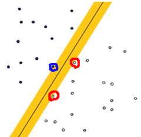
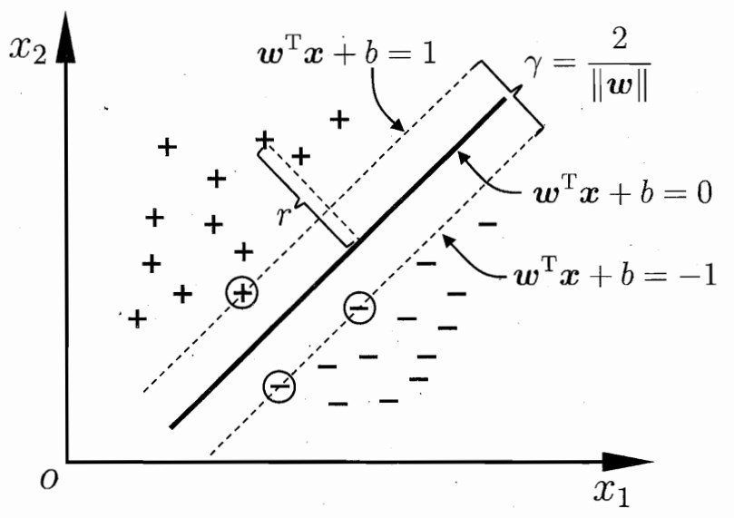
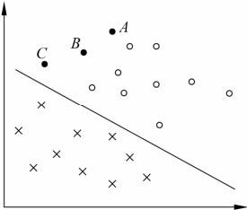
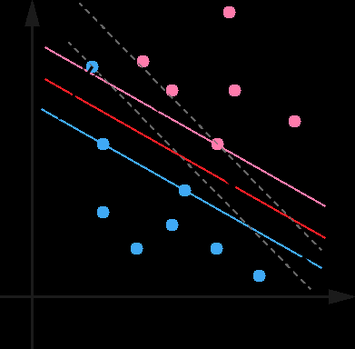
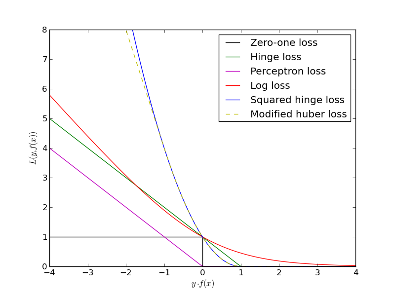

title: SVM支持向量机
date: 2017-10-18 23:22:09
tags: [线性分类器,模型]
categories:
简介
支持向量机（support vector machines，SVM）是一种二类分类模型。它的基本模型是定义在特征空间上的间隔最大的线性分类器，间隔最大使它有别于感知机。构建一个超平面将数据点分开,使所有数据距离超平面的距离最大。其中红色与蓝色的数据点成为支持向量

知识体系结构
- 学习一个线性的分类器，即线性可分支持向量机，又称为硬间隔支持向量机；
- 当训练数据近似线性可分时，通过软间隔最大化，也学习一个线性的分类器，即线性支持向量机，又称为软间隔支持向量机；
- 当训练数据线性不可分时，通过使用核技巧及软间隔最大化，学习非线性支持向量机。
模型
输入：是线性可分的 $m$ 个样本${(x_1,y_1), (x_2,y_2), …, (x_m,y_m),}$,其中 $x$ 为 $n$ 维特征向量。$y$为二元输出，值为1，或者-1.
输出：是分离超平面的参数和$w^{\ast }和b^{\ast }$和分类决策函数。
求得最优解,$w^{\ast },b^{\ast }$
推导
分类决策函数为
其他点$(x_0,y_0)$平面$w\cdot x_i + b=0$的距离
因为$y=\pm 1$所以
假设$y(w\cdot x_i + b)\geqslant 1$则

线性可分支持向量机与硬间隔最大化
概念
- 线性可分支持量机的定义
给定线性可分训练数据集，通过间隔最大化或等价地求解相应的凸二次规划问题学习得到的分离超平面为以及相应的分类决策函数线性可分如下图所示：

- 支持向量
距离超平面最近的数据点，如下图所示的圆圈处的数据点。
- 硬间隔硬间隔：两个异类支持向量到超平面的距离之和如下所示

数学模型
SVM的模型是让所有点到超平面的距离大于一定的距离，也就是所有的分类点要在各自类别的支持向量两边。用数学式子表示为：
怎么得到支持向量
根据KKT条件中的对偶互补条件$α_i∗(y_i(w\cdot x_i+b)−1)=0$，如果$α_i>0$则有$y_i(w\cdot x_i+b)=1 $即点在支持向量上，否则如果$α_i=0$则有$y_i(w\cdot x_i+b)≥1$，即样本在支持向量上或者已经被正确分类。
算法
输入：线性可分训练集$T={(x_1,y_1), (x_2,y_2), …, (x_m,y_m),}$,其中$x$为n维特征向量。$y$为二元输出，值为1，或者-1.
输出：是分离超平面的参数和$w^{\ast }和b^{\ast }$和分类决策函数。
- 构造约束优化问题
- 利用SMO算法求得求出上式最小时对应的$α$向量的值$α^∗$向量.
- 计算：求b则稍微麻烦一点。注意到，对于任意支持向量$(x_s, y_s)$，都有假设我们有S个支持向量，则对应我们求出S个$b^{\ast }$,理论上这些$b^{\ast }$都可以作为最终的结果， 但是我们一般采用一种更健壮的办法，即求出所有支持向量所对应的$b_s^{\ast }$，然后将其平均值作为最后的结果。
线性支持向量机与软间隔最大化
概念
- 线性支持向量机
训练数据集不是线性可分的。通常情况是，训练数据中有一些特异点（outlier），将这些特异点除去后，剩下大部分的样本点组成的集合是线性可分的。这时需要修改硬间隔最大化，使其成为软间隔最大化。

本来如果我们不考虑异常点，SVM的超平面应该是下图中的红色线所示，但是由于有一个蓝色的异常点，导致我们学习到的超平面是下图中的粗虚线所示，这样会严重影响我们的分类模型预测效果。
- 软间隔
SVM对训练集里面的每个样本$(x_i,y_i)$引入了一个松弛变量$ξ_i≥0$,使函数间隔加上松弛变量大于等于1，也就是说：
数学模型
对每个松弛变量$ξ_i$，支付一个代价$ξ_i$，这个就得到了我们的软间隔最大化的SVM学习条件。目标函数由原来的
C>0称为惩罚参数，一般由应用问题决定，C值大时对误分类的惩罚增大，C值小时对误分类的惩罚减小。最小化目标函数包含两层含义：使$\frac{1}{2}||w||^2$尽量小即间隔尽量大，同时使误分类点的个数尽量小，C是调和二者的系数。
支持向量

根据软间隔最大化时KKT条件中的对偶互补条件$α_i∗(y_i(w\cdot x_i+b)−1+ξ_i^∗)=0$我们有
- 如果$α=0$,那么$y_i(w\cdot x_i+b)−1≥0$,即样本在支持向量上或者已经被正确分类。如图中所有远离支持向量的点。
- 如果$0≤α≤C$,那么$ξ_i=0,y_i(w\cdot x_i+b)−1=0$,即点在支持向量上。如图中在虚线支持向量上的点。
- 如果$α=C$，说明这是一个可能比较异常的点，需要检查此时$\xi_i$
- 如果$0≤ξ_i≤1$,那么点被正确分类，但是却在超平面和自己类别的支持向量之间。如图中的样本2和4.
- 如果$ξ_i=1$,那么点在分离超平面上，无法被正确分类。
- 如果$ξ_i>1$,那么点在超平面的另一侧，也就是说，这个点不能被正常分类。如图中的样本1和3
算法
输入：线性可分的$m$个样本$(x_1,y_1),(x_2,y_2),…,(x_m,y_m)$,,其中$x$为$n$维特征向量。$y$为二元输出，值为1，或者-1.
输出：是分离超平面的参数和$w^{\ast }$和$b^{\ast }$和分类决策函数。
- 选择一个惩罚系数C>0, 构造约束优化问题
- 用SMO算法求出上式最小时对应的$α$向量的值$α^∗$向量.
- 计算$w^{} = \sum\limits_{i=1}^{m}\alpha_i^{}y_ix_i$
- 找出所有的S个支持向量,即满足$0<α_s<C$对应的样本$(x_s,y_s)$，通过 $y_s(\sum\limits_{i=1}^{S}\alpha_iy_ix_i^Tx_s+b) = 1$，计算出每个支持向量$(x_s,y_s)$对应的$b_s^{\ast }$,计算出这些$b_s^{\ast } = y_s - \sum\limits_{i=1}^{S}\alpha_iy_ix_i^Tx_s$. 所有的$b_s^∗$对应的平均值即为最终的$b^{\ast } = \frac{1}{S}\sum\limits_{i=1}^{S}b_s^{\ast }$
- 这样最终的分类超平面为：$w^∗\cdot x+b^∗=0$，最终的分类决策函数为：
合页损失函数
线性支持向量机还有另外一种解释如下：
其中$L(y(w \bullet x + b)) = [1-y_i(w \bullet x + b)]_{+}$称为合页损失函数(hinge loss function)，下标+表示为：
也就是说，如果点被正确分类，且函数间隔大于1，损失是0，否则损失是$1−y(w∙x+b)$,如下图中的绿线。我们在下图还可以看出其他各种模型损失和函数间隔的关系：对于0-1损失函数，如果正确分类，损失是0，误分类损失1， 如下图黑线，可见0-1损失函数是不可导的。对于感知机模型，感知机的损失函数是$[-y_i(w \cdot x + b)]_{+}$，这样当样本被正确分类时，损失是0，误分类时，损失是$-y_i(w \cdot x + b)$，如下图紫线。对于逻辑回归之类和最大熵模型对应的对数损失，损失函数是$log[1+exp(−y(w\cdot x+b))]$, 如下图红线所示。

非线性支持向量机与核函数
概念
- 非线性分类问题
非线性分类问题是指通过利用非线性模型才能很好地进行分类的问题。如下图所示，无法用直线（线性模型）将正负实例正确分开，但可以用一条椭圆曲线（非线性模型）将它们正确分开。用线性分类方法求解非线性分类问题分为两步：首先使用一个变换将原空间的数据映射到新空间；然后在新空间里用线性分类学习方法从训练数据中学习分类模型。

- 核函数
设$\mathbb{X}$是输入空间（欧氏空间$\mathbb{R}^{n}$的子集或离散集合），又设$\mathbb{H}$为特征空间（希尔伯特空间），如果存在一个从$\mathbb{X}$到$\mathbb{H}$的映射使得对所有$x,z\in \mathbb{X}$，函数$K(x,z)$满足条件则称$K(x,z)$为核函数，$\Phi (x)$为映射函数，式中$\Phi (x)\cdot \Phi (z)$为$\Phi (x)$和$\Phi (z)$的内积。

正定核函数
一个函数要想成为正定核函数，必须满足他里面任何点的集合形成的Gram矩阵是半正定的。也就是说,对于任意的$x_i \in \chi ， i=1,2,3…m$，$K(x_i,x_j)$对应的Gram矩阵$K = \bigg[ K(x_i, x_j )\bigg]$是半正定矩阵，则$K(x,z)$是正定核函数。
常用核函数
- 线性核函数
线性核函数（Linear Kernel）其实就是我们前两篇的线性可分SVM，表达式为：也就是说，线性可分SVM我们可以和线性不可分SVM归为一类，区别仅仅在于线性可分SVM用的是线性核函数。
- 多项式核函数
多项式核函数（Polynomial Kernel）是线性不可分SVM常用的核函数之一，表达式为：其中，$γ,r,d$都需要自己调参定义。
- 高斯核函数
高斯核函数（Gaussian Kernel），在SVM中也称为径向基核函数（Radial Basis Function,RBF），它是非线性分类SVM最主流的核函数。libsvm默认的核函数就是它。表达式为：其中，$γ$大于0，需要自己调参定义。
- Sigmoid核函数
Sigmoid核函数（Sigmoid Kernel）也是线性不可分SVM常用的核函数之一，表达式为：其中，$γ,r$都需要自己调参定义。
算法
输入：$m$个样本$(x_1,y_1), (x_2,y_2), …, (x_m,y_m),$,其中x为n维特征向量。y为二元输出，值为1，或者-1.
输出：分离超平面的参数$w^∗$和$b^∗$和分类决策函数。
算法过程如下：
- 选择适当的核函数$K(x,z)$和一个惩罚系数$C>0$, 构造约束优化问题
- 用SMO算法求出上式最小时对应的$α$向量的值$α^∗$向量
- 得到$w^{\ast } = \sum\limits_{i=1}^{m}\alpha_i^{\ast }y_i\phi(x_i)$，此处可以不直接显式的计算$w^∗$。
- 找出所有的S个支持向量,即满足$0 < \alpha_s < C$对应的样本$(x_s,y_s)$，通过 $y_s(\sum\limits_{i=1}^{S}\alpha_iy_iK(x_i,x_s)+b) = 1$，计算出每个支持向量$(x_s,y_s)$对应的$b_s^{\ast }$,计算出这些$b_s^{\ast } = y_s - \sum\limits_{i=1}^{S}\alpha_iy_iK(x_i,x_s)$. 所有的$b_s^{\ast }$对应的平均值即为最终的$b^{*} = \frac{1}{S}\sum\limits_{i=1}^{S}b_s^{\ast }$
这样最终的分类超平面为：$\sum\limits_{i=1}^{m}\alpha_i^{\ast }y_iK(x, x_i)+ b^{\ast } = 0$，最终的分类决策函数为：
SMO算法
支持向量机原理(一) 线性支持向量机
支持向量机原理(二) 线性支持向量机的软间隔最大化模型
支持向量机原理(三) 线性不可分支持向量机与核函数
支持向量机原理(四) SMO算法原理